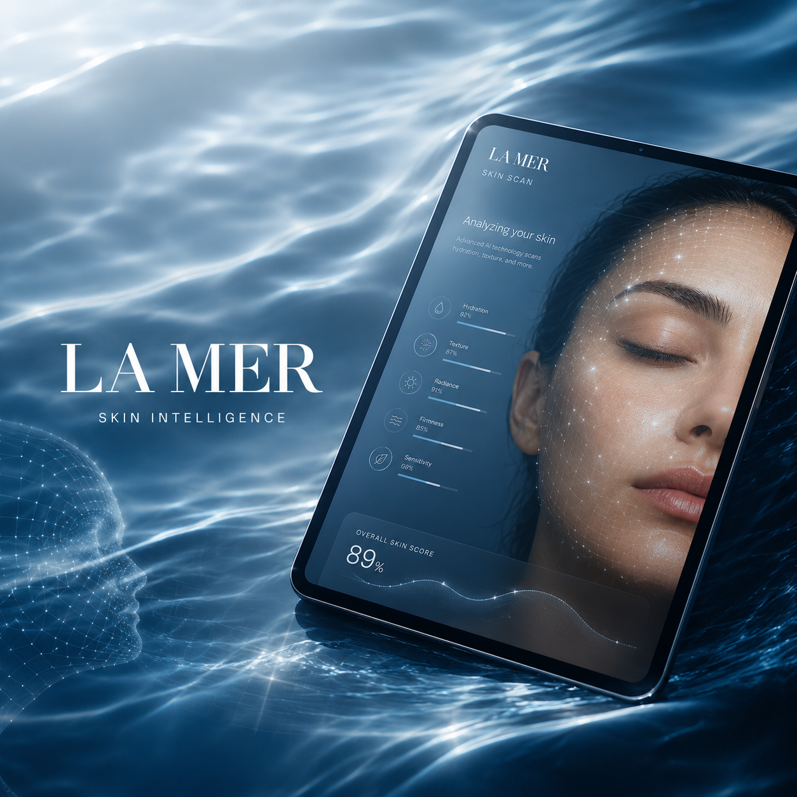
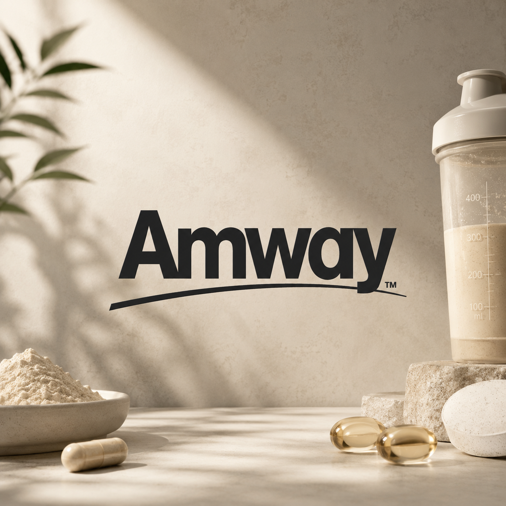
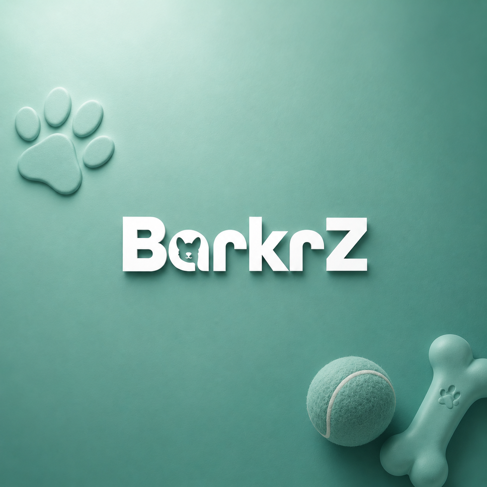

Selected work
06 case studies
01
 02
02
 04
04
Jo Malone × Apple Vision Pro
Reimagining fragrance discovery for spatial computing.
→
02
La Mer × Revieve
Turning a clinical skin-analysis result into a guided luxury consultation.
→
03MAC Cosmetics: Brow Recommender
An AI virtual try-on that ships: scan, learn, shop.
→
04
Amway: Design system & token architecture
Primitive-to-semantic tokens and governance for 15+ teams.
→
05Ezlogbook
The simplest pilot logbook on the market. Log a flight in one step.
→ 06BarkrZ
Pet-tag profiles playful enough to go viral on their own.
→